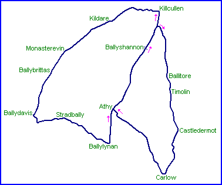

| Address | The circuit is no longer operational |
|||||||||
| Telephone | ||||||||||
| Website | ||||||||||
|
||||||||||
Athy
1903 Gordan Bennett Cup Circuit

Laps run in order Carlow-Kildare-Carlow-Kildare-Carlow-Kildare-Kildare
| Length | Combined: 103.000 Miles // 165.755 km |
Carlow: 40.000 Miles // 64.371 km |
Kildare: 51.874 Miles // 83.479 km |
|
| Direction | Carlow Section: Clockwise | Kildare Section: Anticlockwise | ||
| Address | The circuit is no longer operational |
|||||||||
| Telephone | ||||||||||
| Website | ||||||||||
|
||||||||||
Lasted Updated: 24 September 2004 16:38:00 GMT Daylight Time